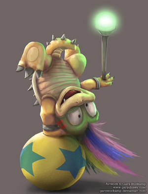
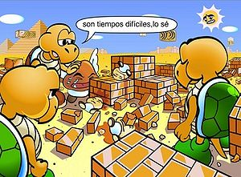

Koopa
 De: La Frikipedia, la enciclopedia extremadamente seria.
De: La Frikipedia, la enciclopedia extremadamente seria.
| De la serie animales y otros bichejos:
|
|
|
| Nombre común:
|
Koopa.
|
| Nombre científico:
|
Tortugus amarillentus.
|
| Especie:
|
Tortuga.
|
| Subespecie:
|
Amarilla.
|
| Alimentación:
|
Gambas.
|
| Apariencia:
|
Es una tortuga que parece estar dibujada por Matt Groening.
|
| Hábitat natural:
|
Reino Koopa.
|
| Localización:
|
Reino koopa.
|
| Número aproximado de ejemplares:
|
Cada vez menos por culpa de Mario.
|
| Fecha de extinción:
|
Dentro de nada.
|
| Pokemonización:
|
Squiterl.
|
Los koopas son unas especies de tortuga que habitan en el reino koopa, evolucionaron y empezaron a andar a dos patas de buena a primera, la mayoría solo visten con zapatos del mismo color que el caparazón, es decir, se tapan los pies pero van sin calzoncillos, aunque ay unas imágenes en internet que demuestran que podrían estar mucho más desnudos.Su rey es Bowser que consiguió el mando por un golpe de estado y provoca a Mario, lo cual forma el caos en el reino koopa, ya que mata a todos los habitantes que encuentra en su camino.Los koopas se negaron a salir en la mierda de película de super mario bros por eso los sustituyen por dinosaurios y a Bowser por un hombre.
Tipos de koopas

Koopa hablando mal de Mario
 Lemmi koopa en pleno éstasis
Koopa troopa: Son los koopas normales con hepatitis b, sus caparazones pueden ser de varios colores:si tienen baja la autoestima se vuelven verde y acaban suicidándose, si come muchos pepinillos se vuelven rojos y al comer los caparazones puedes escupir fuego, los koopas azules son descendientes de un hijo que tubieron sonic y un koopa, estos corren más, los koopas amarillos son hijos de un koopa verde y un koopa azul.Los koopa troopa tienen el puesto más bajo en la jerarquía del reino koopa, todos tienen la obligación de llamarse koopa.(esto se debe a que Bowser se lía con los nombres)
- Koopa paratroopa: Son koopas normales que se han pegado alas con fiso(esto explica que se les caigan al saltar encima)para poder volar, tambien pueden ser de varios colores y tienen las mismas características que los koopa troopa.
- Huesitos: Son zombies de los koopas a los que Mario asesinó y han vuelto a la vida para vengarse de él.
- Hermanos martillo: Son valientes guerreros armados con martillos que luchan para acabar con la carnicería que Mario está provocando, también hay hermanos boomerang, hermanos maza, hermanos fuego y hermanos sumo.
- Lakitu: Son koopas con la cara redonda y los ojos más pequeños que los otros koopas, esto se debe a que padece el síndrome de Down, esa también es la razón de por qué tira pinchones desde su nube mágica.
- Magikoopa: Son koopas que practican la brujería, antiguamente eran quemados hasta que Bowser asumió el mando, ahora Bowser los usa para acabar con Mario y poder
follar casarse con Peatch.
- Gran magikoopa: Es un magikoopa más poderosoque el normal y tiene una vara con la que
se masturba lanza hechizos.
- mechakoopa: Son robot koopas que más que a un koopa se parece al pájaro loco por lo que Bowser
castigó brutalmente y luego mató de forma lenta y dolorosa despidió al que lo hizo.
- koopalrool: Son koopas que forman parte del ejército del reino koopa, la mayoría luchan por que están traumatizados, por que Mario mató a alguien de su familia, o por los mensajes subliminales que Bowser mete en telekoopa, ya que Bowser solo paga el equivalente a 3€ al mes.
- Troopa jr.: Es un koopa joven que se dedica a pegar palizas a otros niños koopas y grabarlas con el movil para, más tarde, colgarlo en youtube, su sueño es pegarle una paliza a Mario.
- Super koopa: Es un koopa que puede volar, esta especie se formó cuando Superman violó en cuestión de segundos a una koopa sin que esta se diera cuenta, más tarde nació este engendro sin caparazón, viste una capa, una camiseta y unos zapatos azules, salta a la vista que esta última generación de Super Koopas no tienen pene, ya que Bowser ordenó castrarlos para que no se reproducieran.
- Hermanos Koopa: Son cuatro hermanos koopas ninja, su madre era una
guarra koopa que se tiró a las tortugas ninja en una noche, cada una engendró un hijo del que no quieren saber nada.
- Tutankoopa: Es un magikoopa que está obsesionado con el antiguo Egipto, está loco y ataca a todo es que se acerca al desierto en el que él vive, se alimenta de escorpiones y pasa la mayor parte del día viendo la momia una y otra vez mientras que hace bailes extraños, cuando no está viendo la momia está haciendo geoglíficos sin sentido.
- Koopa kids: Es el club de fans de Bowser en el que solo figuran tres koopas.
- Bowser: Es el rey del reino koopa asumió el puesto mediante un golpe de estado, Mario cree que secruesta a su novia muchas veces por simple diversión, pero la realidad es que mantiene una relación con ella y por eso hacen ese numerito tantas veces, Peach es la madre de Wendy. Bowser es hermafrodita por eso de algunos hijos es el padre y de otros la madre. Bowser dictó la ley de no llevar pantalones en el reino koopa. Bowser se llamaba king koopa pero se cambió legalmente el nombre cuando Mario empezó a sospechar de su relación.
- Larry koopa: Su padre es sonic ya que estubo una semana en el reino koopa y bebió mucho, su madre es Bowser que lo discrimina por ser hippi.
- Morton koopa: Su padre es Donkey Kong(que es hijo de King Kong)su madre es Bowser, Donkey Kong le dió la idea de montar un secuestro a cambio de placer.
- Wendy O. Koopa: Su madre es Peach y su padre Bowser, como su nombre indica es una ocupa y Bowser le tiene especial cariño por ser su única hija.
- Iggi Koopa: Es el más listo de los hijos de Bowser.Aunque no se sabe con exactitud se sospecha que su padre es Barragán
- Roy Koopa: Pertenece a la mafia koopa, se sabe que es hijo de Bowser y Kirby pero no se sabe que papel desempeña cada uno ya que ambos son hermafrodita.
- Lemmi koopa: Toma muchas drogas, es hiperactivo y se pasa la vida encima de una bola, por que cree que el suelo quema, no se sabe quien es su padre, su madre es Bowser.
- Ludwig von koopa: Su madre es Bowser y su padre Bethoven, el nombre se lo pusieron por él, es gay.
- koopa kid: Es hijo no reconocido de Bowser lo tiene de exclavo y lo trata como una mierda.
- Yoshi: Es el padre/madre de Mario y Luigi (es hermafrodita). Es el unico Koopa que Mario no maltrata al ser familiar suyo. Es muy neurotico y cobarde como siempre dice: Cuidaduuu!!!. No tiene cascaron.
 Koopas sufriendo los daños causados por Mario
Declaraciones de un koopa en contra de mario
Mario no nos deja vivir tranquilos, estamos dando un paseo y nos pisa y empieza a acernos putadas, eso si no le da por matar, es un sádico asqueroso.Mira, entiendo que quiera recuperar a su novia, que por cierto le es infiel hasta con Donkey Kong, pero es que por mi se la entregaba y ya está resuelto el caso, pero no, Bowser no puede parar de follársela, nos tenemos que joder nosotros los koopa que ni nos va ni nos viene, nosotros que a Mario no le hemos hecho nada, Mario tiene que estar entre rejas o que en lugar de matar seres vivos y fumar tantas setas se dedique a lo suyo, que es albañil y lo único que hace es coger las monedas que se encuentra en las tuberías y de eso vive, es un incompetente por favor si usted es policía deténgalo, eso es todo, gracias por atenderme y bueno, aver si esto sirve de algo.
Vease tambien
|
|
 Shooter Shooter
 Terror Terror
 Velocidad Velocidad
 Rol Rol
 Estrategia Estrategia
 Aventuras Aventuras
 Fight! Fight!
 Clásicos Clásicos
 Deportivos Deportivos
 Aventura gráfica Aventura gráfica
 Novela visual Novela visual
 Personajes de videojuegos Personajes de videojuegos
|
Autor(es):
- Frikiman
- Veni Vidi Vici
- Dark temptation
- Conjorge
- Super galápago
- Gñapero Solitario
- Shadowmura
- Wguayana
- Generibot
- Alien88
Frikipedia 2005-2016, Licencia
GFDL 1.2 - Extraído por FrikiLeaks